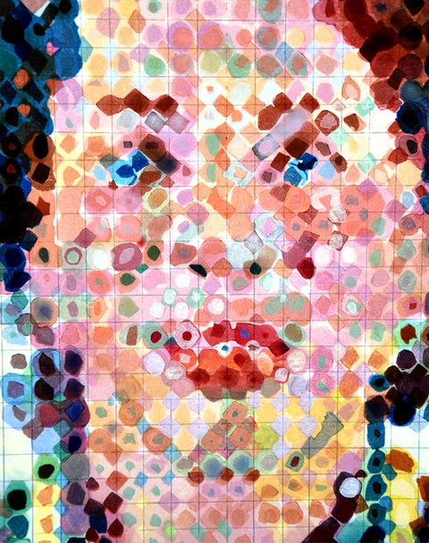
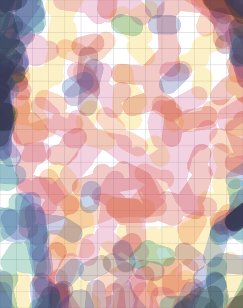
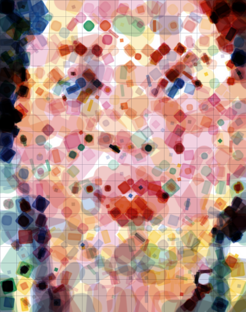
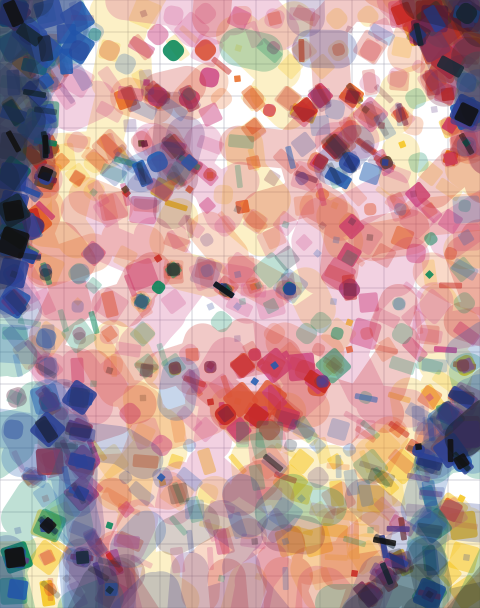
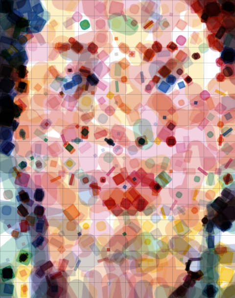
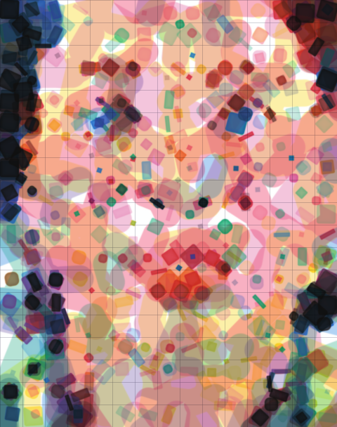
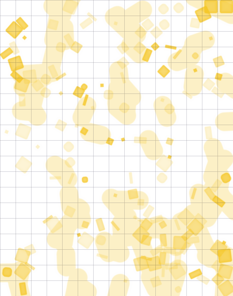
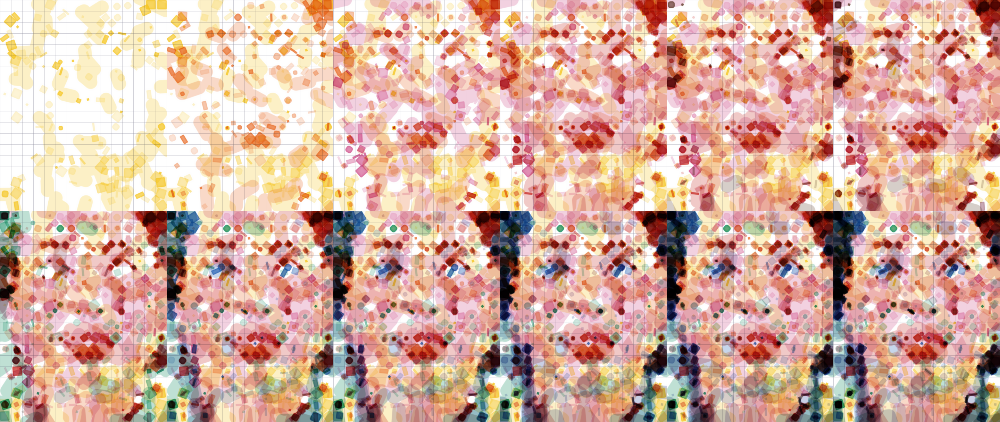

JAX layered marks: grid, drags, stamps, glaze mixing
- Grid kept. The pencil grid is measured from the reference (83 px period, 15 × 19 cells) and drawn first.
- Underlayer is dragged, and unified. A 1.2-cell wash brush: per ink and cell JAX may lay one stroke (angle, length up to 3.5 cells). All drags of one ink merge into one wet wash at a single dilution, so overlapping strokes of the same colour never darken into seams. In the SVG each ink's drags share one group opacity.
- Stamps on the lattice. Eight rotatable square-based tools (square L/M/S, pebble M/S, slab, bar, chip) placed only on cell centres and grid crossings, as in the reference, with a tiny wobble.
- Colour mixing: transparent glaze. Every layer tints what is under it, so overlaps reveal mixtures. The fit is scored in Oklab with hue weighted up, which removed the cool cast.
- Print order yellow → orange → rose → red → sepia → burgundy → green → blue → purple → royal blue → blue black → black; brush before stamps within each ink.



{kind=link}

Mixing model: glaze vs Mixbox (same solve, before the detail pass)


Build in print order


1,483 marks (413 drags, 1,070 stamps) · 304 dips · RMSE 0.125 (blurred 0.036) · about 9 min on the RTX 4070 SUPER · tools are placeholders · stamp watercolour rim is preview only